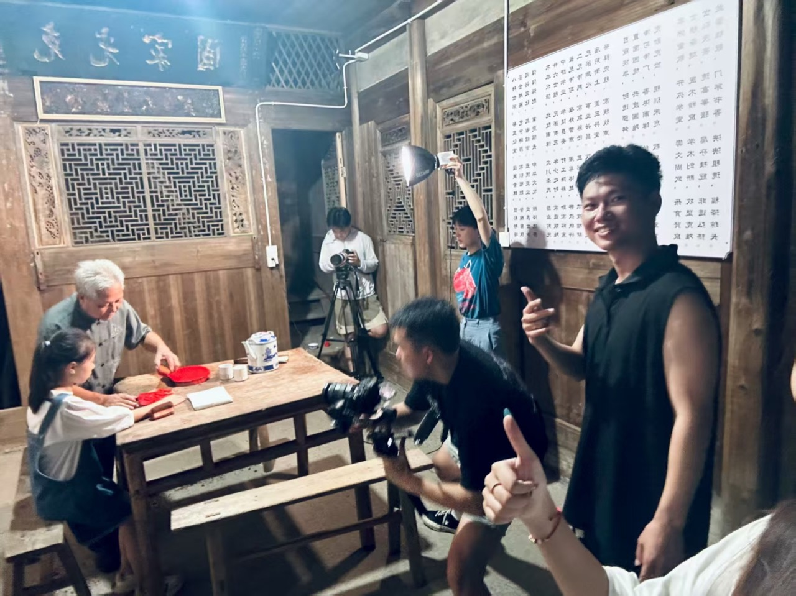
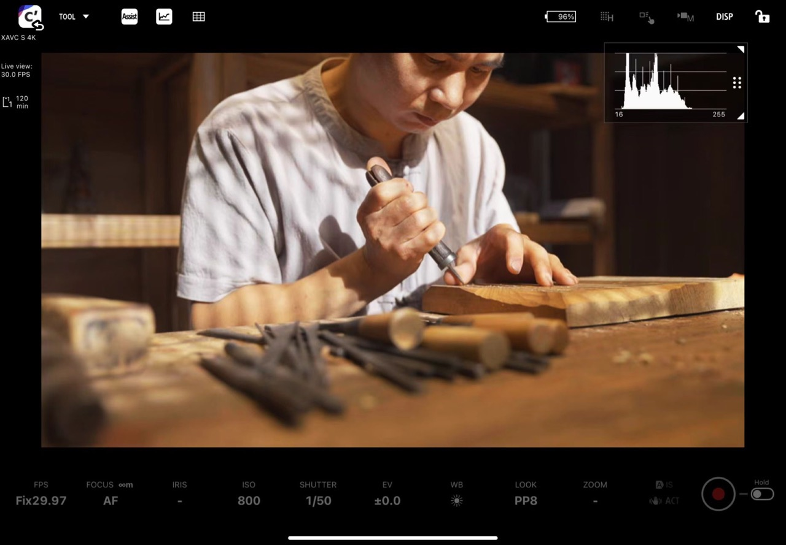
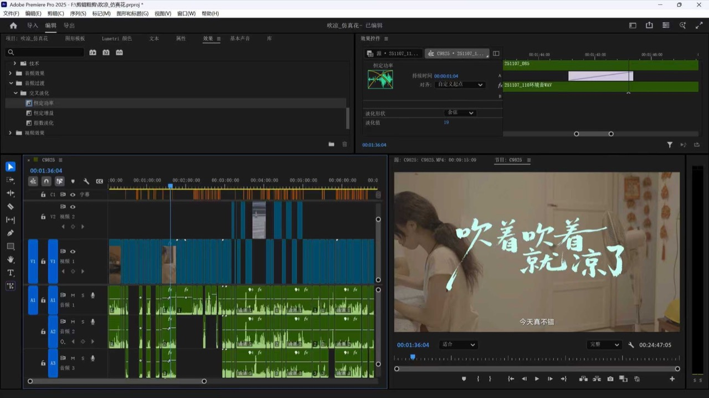

内容开发与文本处理
使用 DeepSeek、GPT 等工具辅助主题研究、文案与脚本迭代，并用于采访整理、信息归纳及字幕辅助制作。
 第二人生
项目合作
第二人生
项目合作
Second Chapter Studio高校与地方文化视听内容
校园 · 地方 · 青年
让故事，拥有再次被看见的可能。
从主题策划到完整成片，
以专业影像与 AI 创作连接校园和地方。
我们做什么
第二人生是一支专注高校新媒体与地方文化传播的青年创作团队。我们从具体的人、场景和传播任务出发，统筹创意、拍摄、美术与后期，让一条影片，也能延展为一组持续发生的内容。
高校与地方两类核心服务场景
策划至交付完整视听制作协作
实拍 × AI内容与技术共同探索
精选案例
高校宣传、青年叙事与地方文化。收录工作室及主创参与的代表项目，具体分工见案例介绍。
校园空间、人物与地方现场的摄影选辑。
服务内容
为单个项目定制，也为学期、年度和系列栏目提供持续内容合作。

AI 创作
将大语言模型、生成式视觉与专业后期协同使用，探索适合校园与地方文化的内容形式。
AI 是我们的创作工具，也是持续建设的能力方向。它帮助团队拓展方案与画面表达，最终仍由主创完成叙事判断、视觉统筹和成片制作。
使用 DeepSeek、GPT 等工具辅助主题研究、文案与脚本迭代，并用于采访整理、信息归纳及字幕辅助制作。
已尝试 AI 生图、即梦视频生成与画面编辑，将视觉构想、生成素材和实拍镜头放入专业后期流程中整合。
面向校园成长、青年实践与地方文化，发展创意样片、人物与场景设定、连续镜头及系列内容，探索联合制作。
制作与协作
明确受众、用途、预算与发布时间，共同确定主题和作品规格。
完成叙事方案、视觉方向与拍摄安排，确认人员分工和审核节点。
协同导演、摄影与美术执行，完成素材采集、剪辑和视听包装。
集中处理反馈，核对字幕、声音与版本规格，按约定完成归档交付。



创作团队
以项目负责人统筹、商务统一对接、专业岗位协作的方式组织创作。
项目负责人 · 导演与后期
统筹业务方向、创意开发与项目制作，负责导演执行、预算排期和成片质量，协调各阶段交付。
美术指导
负责画面风格与视觉统筹，围绕项目主题协调色彩、场景与美术表达，与导演及摄影共同建立作品的视觉方向。
商务拓展与客户对接
负责客户开发、需求沟通与合作渠道，协调报价、制作进度、验收和回款，让需求与执行有效衔接。
摄影摄像
负责现场拍摄与机位协作，参与设备准备、素材管理及项目执行，与团队共同完成现场影像采集。
摄影摄像
负责现场拍摄与执行协作，参与素材整理和制作衔接，为不同拍摄任务提供协同支持。
关于工作室
影像让一段生活，拥有再次被观看和理解的可能。
我们希望把这种可能，带入校园与地方的内容表达。让办学特色有具体的人物和场景，让文化传承不止停留在概念，让青年经验成为能够被理解的故事。
工作室以高校新媒体内容为主营，以地方文化传播为重要方向，提供从主题策划、摄制到版本交付的一体化协作，并持续探索 AI 创作与主题微短剧。
主创实践涵盖中英文招生宣传、校园短片、地方文化纪录与文旅传播。相关参与作品累计传播达百万级，影像作品获福建省大学生影像大赛一等奖、二等奖等成果。